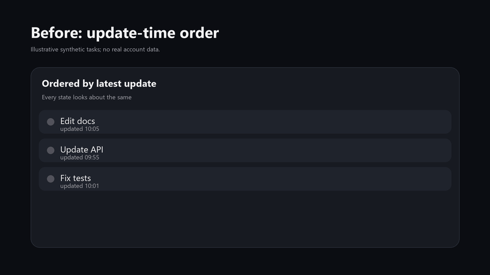

Start time, not last noise
Initial loading and live updates use the same recency comparator: the task or process start time.
Unofficial Codex Desktop workflow mod
Start-time ordering, plan-waiting yellow, pinned red, ordinary unread blue, and human-readable remote project names — built as a verified local copy.
irm https://github.com/catterhu1207-ux/codex-desktop-workflow/releases/latest/download/install.ps1 | iex
Windows x64 · You supply your own official Codex package · No official binaries are redistributed

Initial loading and live updates use the same recency comparator: the task or process start time.
Sidebar, search, Work picker, prompt, tooltip, and accessibility text show a recognizable name while routing identity stays unchanged.
Existing tasks keep their valid model and reasoning settings; the global default applies to new tasks.
Why trust it
The installer validates the exact official package, keeps the official bundled backend, runs two isolated 60-second launches, and compares the official app.asar before and after.
Questions before you install
Yes. The tool builds a local copy; it does not provide or share an account. Sign in inside the copy after it launches.
No. The source app is not modified, and the installer verifies that its app.asar stays unchanged.
Yes. Close Codex, then run the installer with -MigrateData. It creates an independent snapshot and excludes authentication and configuration.
No. It is an unofficial community project. It does not distribute official binaries or replace official support.